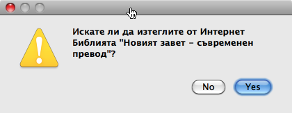
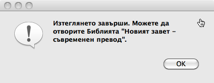
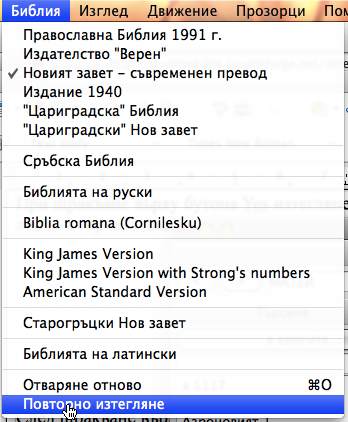
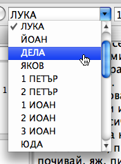
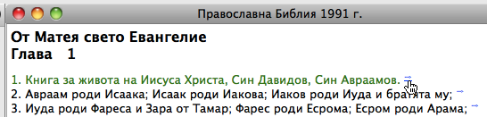
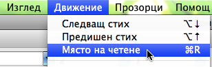
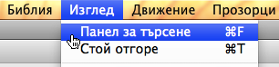
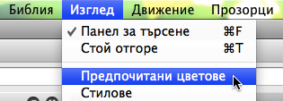

|
УКАЗАНИЯ
ЗА РАБОТА Ваньо Георгиев, <readthebible-general@lists.sourceforge.net> GNU Free Documentation License
ВъведениеМного е вероятно на потребители, които обичат да експериментират и да откриват сами възможностите на програмите, които ползват, тези указания да се сторят твърде подробни. Указанията обаче са такива за да помогнат и на хора с малък опит в ползването на софтуер, а също и за да разкрият всички възможности на програмата, които са полезни, но е малко вероятно да бъдат забелязани само с опитване. Това е първоначална, незавършена версия на указанията, с които считам, че трябва да е придружена програмата. Извинявам се за тяхната непълнота, но и искам да напомня, че ако желаете „Компютърна Библия“ да се развива по-бързо, трябва да участвате в работата по нея. (Вижте раздел: „Помогнете“, на сайта на програмата). Изтегляне и инсталиранеВижте раздел "Изтегляне и инсталиране" на сайта на програмата. Предназначение на програмата Компютърна Библия„Компютърна Библия“ е програма за четене, изучаване и цитиране на Свещеното писание - Библията. Програмата съдържа различни преводи на Библията, които може да се отварят поотделно или едновременно по желание на потребителя. Разлики при различните операционни системиПрограмата е междуплатформена и има версии за различни операционни системи: Windows, Mac OS X и Linux. Версиите за различните операционни системи функционират еднакво и се различават само по външен вид и някои малки, характерни за операционната система особености. В Mac OS XНа Mac компютри въпреки, че на клавиатурата има клавиш Ctrl, за образуване на клавишни комбинации се използва не този клавиш а клавиша cmd. В настоящите указания клавишните комбинации са описани за клавиш Ctrl, но ползващите програмата на Mac трябва да имат предвид, че на техните компютри това е клавиша cmd. Някои команди като: About Bible (Относно програмата), About Qt (Относно Qt) и Preferences... (Настройки), се показват в системното меню на програмата, което се показва при щракване върху името на програмата „Bible“ на лентата за програмни менюта. Отваряне на даден превод на БиблиятаЩраквате върху надписа от главното меню „Библия“ и после върху името на превода, който искате да се отвори, например, както е показано:
Възможно е да се покаже прозорец с надпис „Няма такава книга в тази Библия.“ поради следната причина: По подразбиране, веднага след инсталирането си, при първото отваряне на Библия, програмата се опитва да покаже глава 1 на книгата „Битие“, а при следващите отваряния показва главата, на която последно е бил отворен някой превод на Библията. Надписът „Няма такава книга в тази Библия.“ се показва в два случая: 1. когато отворите превод съдържащ само Новия завет, а последно е била отворена книга от Стария завет и 2. когато последно е отваряна неканонична книга, която липса в повечето преводи. При поява на този надпис е необходимо да изберете книга от списъка с книги на отворения превод. Вижте: Отваряне на Библията на определена книга, глава и стих. Изтегляне на преводи от ИнтернетПри опит за отваряне превод на Библията, файловете от който липсват, се показва въпрос дали искате да изтеглите от Интернет този превод. Например:  При щракване върху бутона Yes изтеглянето започва, а напредването му се показва със постепенно запълващата се лента в горната дясна част на прозореца на програмата. Когато изтеглянето завърши се показва съобщение. Например:  След щракване върху бутона „OK“ и скриване на това съобщените, вече можете да отворите изтегления превод. Ако желаете да изтеглите от Интернет отново даден превод (в случай, че сте научили, че преводът на сайта е обновен) изберете от менюто: „Библия“ - „Повторно изтегляне“.  Отваряне на Библията на определена книга, глава и стихИзбиране на книгаС мишкатаНай-привичният начин за отваряне на необходимата книга е с помощта на мишката от падащият списък с имената на книгите.  Щраква се върху бутона с триъгълник в дясната страна на падащия списък, за да се отвори този списък, и се движи курсора на мишката върху имената на книгите докато се оцвети името на търсената книга. Ако името на търсената книга не се вижда, вероятно се намира по-надолу или по-нагоре и за да се види трябва списъкът да се превърти с помощта плъзгача в дясната му страна. Щом се освети името на търсената книга се щраква върху него. Избраната книга се отваря на главата и стиха изписани в другите две полета. В случай, че номерата в тези полета са недопустимо големи, програмата ги намалява до максимално възможните. С клавишни комбинацииВъпреки, че работата с мишката е по-привична, някои действия се извършват по-бързо с клавиши от клавиатурата. Натиснете клавишната комбинация Alt+B. Това предизвиква да се оцвети цялото име на отворената в момента книга в полето на списъка с имената на книгите. Започнете да пишете първите букви от името на търсената книга. Останалите букви от първото име на книга, започващо с написаните букви, се показват автоматично. Ако това е името на друга книга продължете с още букви докато се покаже името на желаната книга, след което натиснете клавиша Enter. Така се отваря избраната книга на главата и стиха изписани в другите две полета. Ако натиснете клавиш Tab вместо Enter, избраната книга не се отваря, а само се премества курсорът за писане в следващото поле с номера на глава и можете да промените и него. Ако искате да отворите следващата или предишната книга от Библията, когато курсорът за писане се намира в полето с името на книга, щракнете съответно клавиш „стрелка надолу“ или клавиш „стрелка нагоре“. Избиране на глава и стихЗа избиране на глава и стих в програмата има падащи списъци, с които се работи по подобен начин, както със списъка от заглавия на книги. Избирането може да се осъществи както с мишката, така и с клавишите от клавиатурата. Ако изберете книга с помощта на клавиатурата и натиснете клавиша Tab, номерът на глава се осветява и може да напишете друг номер на глава. За да промените и номера на стих, натиснете отново клавиш Tab. Осветява се номера на стих и може да напишете друг номер на стих. Изобщо, щом в съответните полета бъдат изписани желаните: заглавие на книга, номер на глава и номер на стих, натискането на Enter предизвиква отваряне на Библията на избраното място. Повторно отваряне на стиховеПрограмата „Компютърна Библия“ от стартирането си, докато не бъде затворена, запаметява последователността, в която с нея са отваряни стихове. Това позволява, във всеки момент щом решите, да се върнете на предишния отворен стих или обратно. За целта върху панела „Навигация“ има бутони със знаци „<“ и „>“.
Бутонът със знак "<" отваря предишния стих, а бутонът с ">" - следващия, показван вече стих. Същото действие има и щракването в менюто върху: „Движение“ - „Назад“ и върху „Движение“ - „Напред“,
както и клавишните комбинации Alt + , и Alt + . Проследяване на препраткиВ някои от преводите на Библията, например в „Православна Библия“, от много стихове има препратки към други стихове. По подразбиране в края на стиховете, към които има препратки, има знак във формата на стрелка, а самите препратки се показват под текста на главата.  Ако задържите курсора на мишката върху знака в края на стиха, курсорът добива форма на сочеща с показалец ръка. Ако щракнете левия бутон на мишката в този момент, текста в прозореца се превърта надолу и показва препратките в края на главата.
Препратките към други стихове са като хипервръзките в интернет страници. Ако щракнете върху някоя препратка, Библията се отваря на посочения в препратката стих. За да се върнете на предишния стих, натиснете клавишна комбинация Alt + , (Вижте Повторно отваряне на стихове). От диалога за настройване, който се показва при натискане на клавишната комбинация Ctr + , може да се зададе препратките да се показват вътре или в края на стиха, за който се отнасят, вместо в края на главата (Вижте Настройки). Работа с прозорциВсяко щракване върху името на някой превод на Библията в менюто „Библия“ предизвиква отваряне на нов прозорец, който показва една глава от избрания превод. Може да се отворят прозорци, показващи една и съща глава от различни преводи, както и прозорци, показващи различни глави от един превод. Активен (текущ) прозорецВъв всеки момент само един от прозорците е активен – цвета на неговото заглавие е различен от цвета на останалите, а показваните в падащите списъци с имената на книгите и номерата на главите и стиховете съответстват на показваните в него. Също така, в панела за търсене се показва списъкът с думите от показвания в активния прозорец превод на Библията. Този превод ще наричаме активна Библия. При избиране на друга книга, глава и стих се променя не само съдържанието на активния прозорец но и на останалите прозорци, ако те показват други преводи, така че всички прозорци да показват едно и също място на Библията. Когато от един превод на Библията има отворени няколко прозореца, се променя съдържанието само не единия от тях, така че да показва същото място от Библията, както прозорците с други преводи. Активиране на друг прозорец става с еднократно щракване с мишката върху него. Натискането на клавишната комбинация Ctrl + ` (в Windows и Crtl + Tab) предизвиква активиране на следващия прозорец. Повече прозорци от един преводВсяко следващо щракване върху превод на Библията в менюто „Библия“, отваря нов прозорец с една глава от този превод. Отначало новия прозорец показва същата глава, както активния прозорец, но ако отворите друго място от Библията, прозорците, показващи същия превод на Библията не променят съдържанието си. Така може да имате на екрана различни места от Библията. Затваряне на прозорцитеВсеки от прозорците се затваря с щракване на мишката върху бутона за затваряне върху неговата рамка. Активният прозорец може да се затвори и с натискане на клавишната комбинация Crt + W, както и от менюто „Прозорци“ - „Затваряне на текущия“. От менюто: „Прозорци“ - „Затваряне на всички“ се затварят наведнъж всички отворени прозорци, а от: „Прозорци“ - „Затваряне на другите“ се затварят всички прозорци с изключение на активния. Подреждане на прозорцитеПо подразбиране прозорците автоматично се подреждат един до друг, но от менюто „Прозорци“ - „Един върху друг“ може да се избере и „стъпаловидно“ подреждане, един върху друг. С щракване в менюто върху: „Прозорци“ - „Един до друг“ се възстановява подразбиращия се начин на подреждане. Възможно е, с щракване върху бутона за максимизиране върху рамката на един от прозорците, този прозорец да се увеличи (максимизира) така, че да запълни изцяло главния прозорец на програмата. Тогава останалите прозорци остават скрити зад него. За да се покаже друг прозорец отгоре, се натиска клавишната комбинация Ctrl+` или се щраква върху менюто: „Прозорци“ - „Следващ прозорец“. Ако активният прозорец бъде затворен докато е максимизиран, на негово място се максимизира следващия, оставащ прозорец. Ако се отвори нов прозорец, когато активния прозорец е максимизиран, новият прозорец също се максимизира и скрива всички останали. Когато главния прозорец не е максимизиран, всеки от прозорците може да се премести чрез влачене с мишката за горната му рамка, а размерите му се променят чрез влачене с мишката за долния десен ъгъл. Установеното по този начин индивидуално подреждане се запазва само до затваряне на някой от прозорците или до отваряне на нов прозорец. След такова действие прозорците се подреждат по последно избрания начин. Последователно четенеАко сте решили да прочетете някой от преводите на Библията от начало до край, натиснете клавишната комбинация Ctrl+R или щракнете в менюто върху:  Когато за пръв път направите това, активния прозорец се отваря на първия стих от първата книга и глава от съответния превод на Библията. Щом прочетете отворения стих, натиснете клавиш „стрелка надолу“, за да се оцвети следващия стих. Продължете така до края на главата. За да отворите първия стих от следващата глава натиснете клавишна комбинация Alt+“стрелка надолу“. Продължете да четете по този начин до където желаете. Ако междувременно отворите Библията на други места, може бързо да се върнете на мястото, до което сте стигнали с последователно четене с клавишна комбинация Ctrl+R. НастройкиСкриване и показване на панела за търсенеПанелът за търсене се скрива при щракване върху бутончето в горния му десен ъгъл, а се показва отново от менюто:  Задаване на предпочитани цветовеЦветовете за показване на различните елементи в текста на Библията се избират от прозореца, който се показва при щракване върху менюто:  ... Предстои да се допълни |